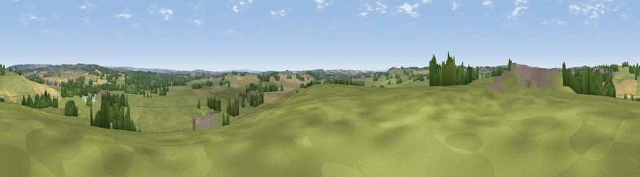

Viewpoint near Standon Mill
#30632 in England · top 44% of its area beats it · near Standon Mill · access?Where it is
The exact computed spot (SJ 82175 32975). Click the marker for map links.
Public access: no public right of way or access land is recorded at this exact spot — it may be on private land. Computed from Natural England's CRoW access layer and OpenStreetMap rights of way — not the legal definitive map. Always verify locally.
The view, rendered

A 360° render of this exact spot computed from the terrain model, tree cover and land cover — summer colours, afternoon light, calibrated against photographs of famous viewpoints. Real trees, hedges and buildings will differ in detail.
The panorama
Grey silhouette: terrain skyline in each direction (720 bearings, Earth curvature and refraction included). Dashed green: skyline with trees (+15 m) and buildings (+8 m) as obstacles. Blue strip: how far the ground is visible on each bearing.
Where the view opens
Wedge length = distance to the farthest visible ground on that bearing (vegetation-aware). Rings at 10, 25 and 50 km.
What fills the view
63% grassland · 22% cropland · 12% woodland · 2% built-up
Angular shares of the visible panorama (visual magnitude), not map area. Landscape diversity 0.43 (0–1 Shannon).
Key numbers
More beautiful places nearby
The staircase of upgrades: each row has a higher view potential than everything closer. Driving times are estimates from straight-line distance, calibrated against real road routing — check an actual route before setting out.
| Place | Direction | Drive | Score |
|---|---|---|---|
| Viewpoint near Croxton | SW · 2 km | ~6 min | 48.3 |
| Viewpoint near Swynnerton | NE · 4 km | ~10 min | 59.4 |
| Viewpoint near Beech | NNE · 7 km | ~14 min | 62.9 |
| Viewpoint near Madeley | NNW · 13 km | ~23 min | 66.7 |
| Bignall Hill | N · 18 km | ~31 min | 75.2 |
| Viewpoint near Marchamley | WSW · 24 km | ~39 min | 77.5 |
| Viewpoint near Mow Cop | N · 25 km | ~40 min | 80.2 |
| Viewpoint near Little Wenlock | SW · 31 km | ~48 min | 84.2 |
52.89392, -2.26640 · source: screening · position refined by local search. Computed location — check access rights before visiting.